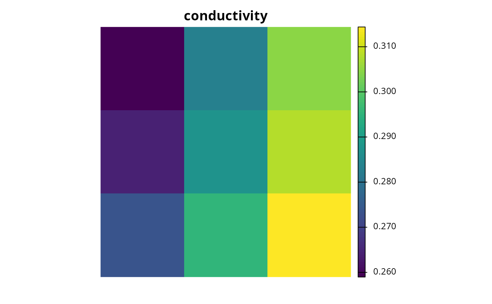
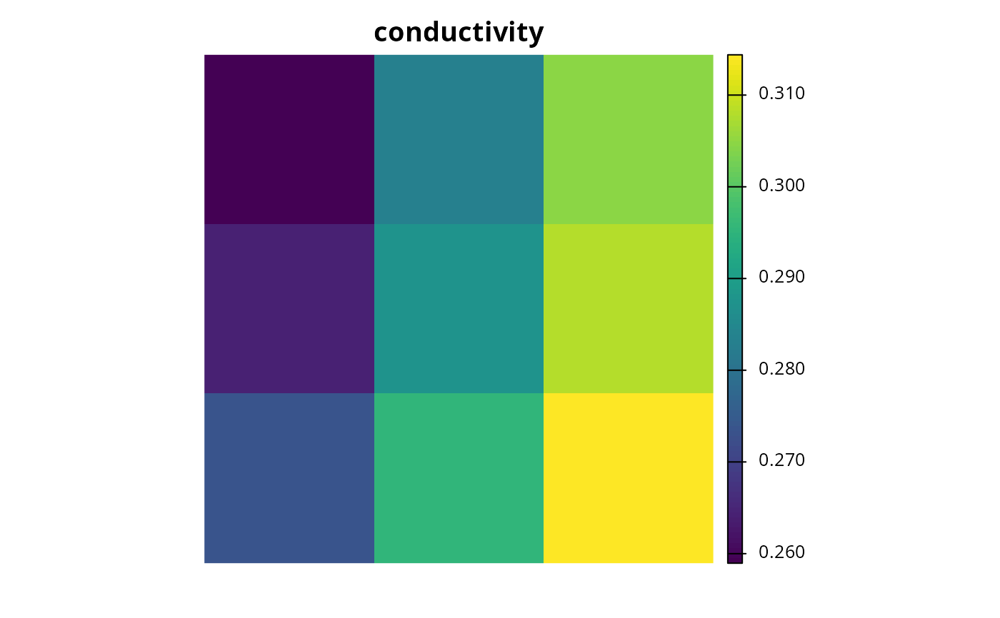
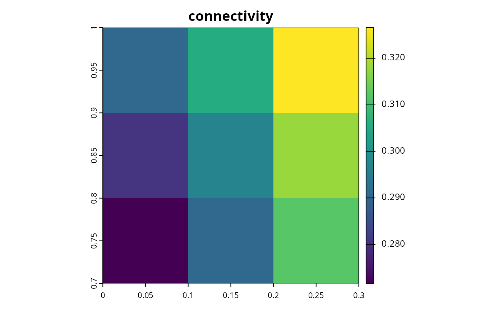
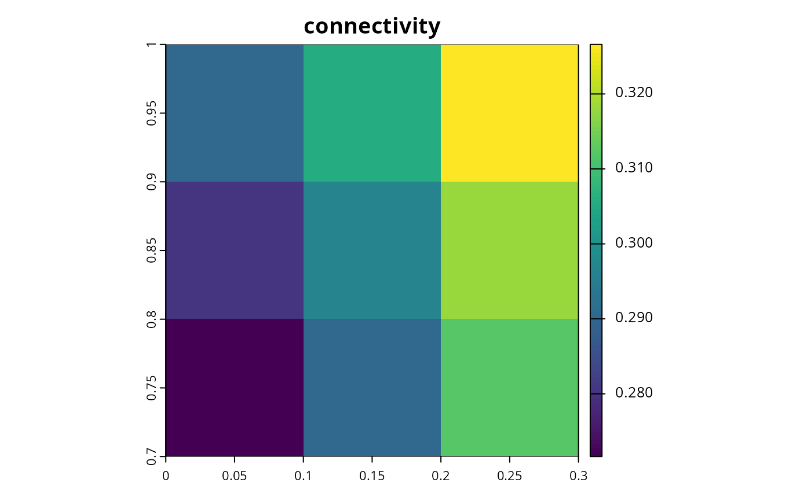
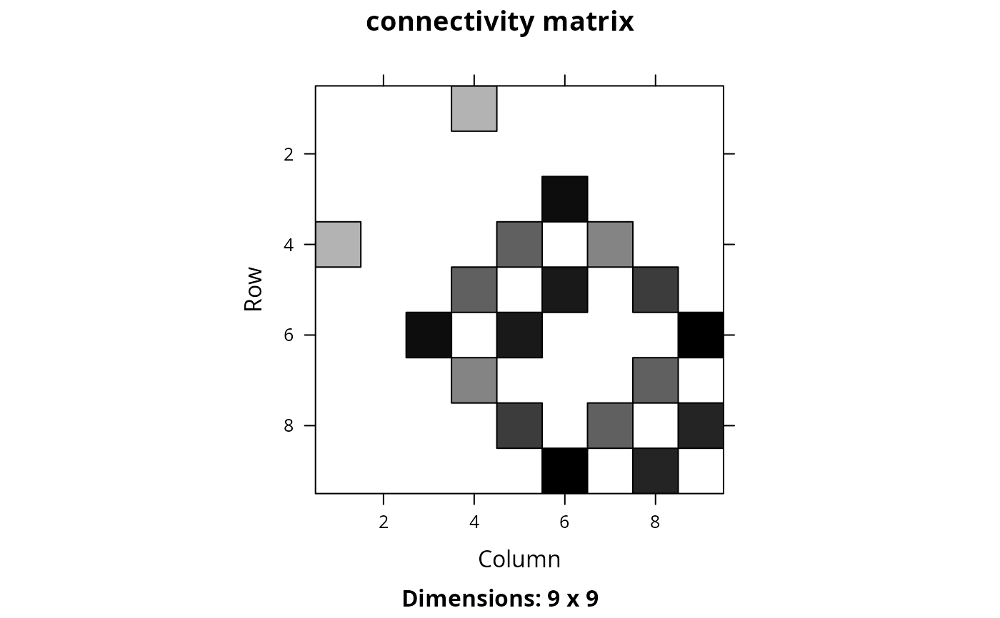
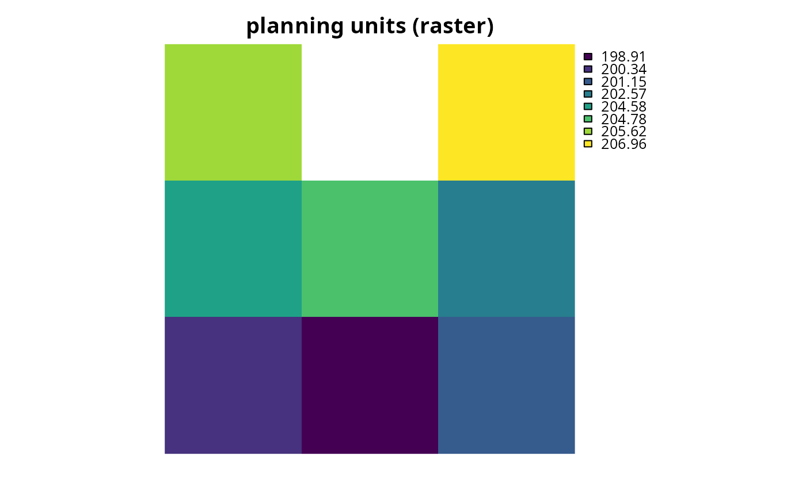
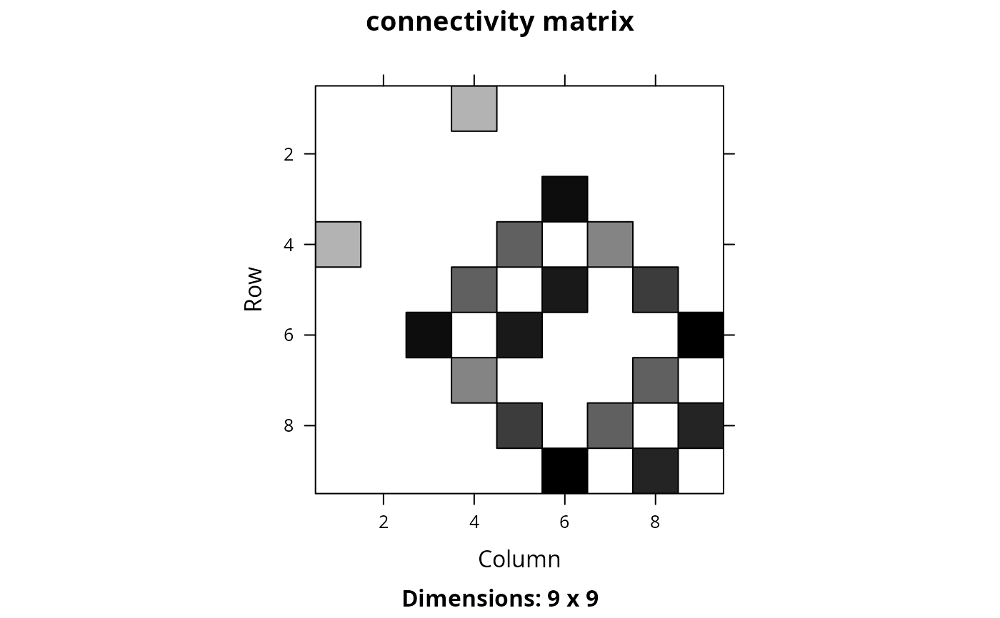
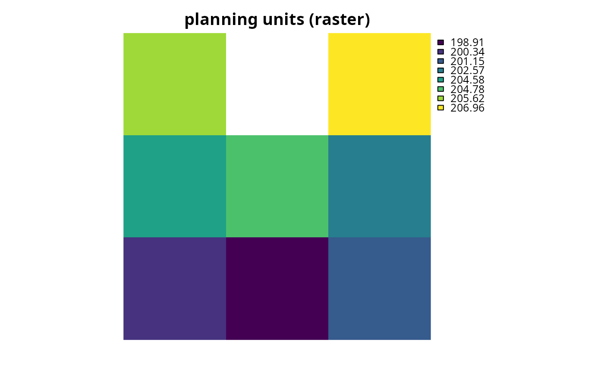

Create a matrix showing the connectivity between planning units. Connectivity is calculated as the average conductance of two planning units multiplied by the amount of shared boundary between the two planning units. Thus planning units that each have higher a conductance and share a greater boundary are associated with greater connectivity.
Usage
connectivity_matrix(x, y, ...)
# S4 method for Spatial,Raster
connectivity_matrix(x, y, ...)
# S4 method for Spatial,character
connectivity_matrix(x, y, ...)
# S4 method for sf,character
connectivity_matrix(x, y, ...)
# S4 method for sf,Raster
connectivity_matrix(x, y, ...)
# S4 method for sf,SpatRaster
connectivity_matrix(x, y, ...)
# S4 method for Raster,Raster
connectivity_matrix(x, y, ...)
# S4 method for SpatRaster,SpatRaster
connectivity_matrix(x, y, ...)Arguments
- x
terra::rast()orsf::sf()object representing planning units.- y
terra::rast()object showing the conductance of different areas across the study area, or acharacterobject denoting a column name in the attribute table ofxthat contains the conductance values. Note that argument toycan only be acharacterobject if the argument toxis asf::sf()object. Also, note that if the argument toxis aterra::rast()object then argument toymust have the same spatial properties as it (i.e., coordinate system, extent, resolution).- ...
additional arguments passed to
fast_extract()for extracting and calculating the conductance values for each planning unit. These arguments are only used if argument toxis asf::sf()object and argument toyis aterra::rast()object.
Value
A Matrix::dsCMatrix symmetric sparse matrix object.
Each row and column represents a planning unit.
Cells values indicate the connectivity between different pairs of planning
units.
To reduce computational burden, cells among the matrix diagonal are
set to zero. Furthermore, if the argument to x is a
terra::rast() object, then cells with missing (NA)
values are set to zero too.
Details
Shared boundary calculations are performed using
boundary_matrix().
See also
Connectivity matrix data might need rescaling to improve optimization
performance, see rescale_matrix() to perform these calculations.
Examples
# \dontrun{
# load data
sim_pu_raster <- get_sim_pu_raster()
sim_pu_polygons <- get_sim_pu_polygons()
sim_features <- get_sim_features()
# create connectivity matrix using raster planning unit data using
# the raster cost values to represent conductance
## extract 9 planning units
r <- terra::crop(sim_pu_raster, terra::ext(c(0, 0.3, 0, 0.3)))
## extract conductance data for the 9 planning units
cd <- terra::crop(sim_features, r)
## make connectivity matrix using the habitat suitability data for the
## second feature to represent the planning unit conductance data
cm_raster <- connectivity_matrix(r, cd[[2]])
## plot data and matrix
plot(r, main = "planning units (raster)", axes = FALSE)
 plot(cd[[2]], main = "conductivity", axes = FALSE)

Matrix::image(cm_raster, main = "connectivity matrix")
plot(cd[[2]], main = "conductivity", axes = FALSE)

Matrix::image(cm_raster, main = "connectivity matrix")
 # create connectivity matrix using polygon planning unit data using
# the habitat suitability data for the second feature to represent
# planning unit conductances
## subset data to 9 polygons
ply <- sim_pu_polygons[c(1:3, 11:13, 20:22), ]
## make connectivity matrix
cm_ply <- connectivity_matrix(ply, sim_features[[2]])
## plot data and matrix
plot(sf::st_geometry(ply), main = "planning units (polygons)")
# create connectivity matrix using polygon planning unit data using
# the habitat suitability data for the second feature to represent
# planning unit conductances
## subset data to 9 polygons
ply <- sim_pu_polygons[c(1:3, 11:13, 20:22), ]
## make connectivity matrix
cm_ply <- connectivity_matrix(ply, sim_features[[2]])
## plot data and matrix
plot(sf::st_geometry(ply), main = "planning units (polygons)")
 plot(terra::crop(sim_features[[2]], ply), main = "connectivity")

Matrix::image(cm_ply, main = "connectivity matrix")
plot(terra::crop(sim_features[[2]], ply), main = "connectivity")

Matrix::image(cm_ply, main = "connectivity matrix")
 # create connectivity matrix using habitat suitability data for each feature,
# this could be useful if prioritizations should spatially clump
# together adjacent planning units that have suitable habitat
# for the same species (e.g., to maintain functional connectivity)
## let's use the raster data for this example, and we can generate the
## connectivity matrix that we would use in the prioritization by
## (1) generating a connectivity matrix for each feature separately, and
## and then (2) summing the values together
cm_sum <- lapply(as.list(cd), connectivity_matrix, x = r) # make matrices
cm_sum <- Reduce("+", cm_sum) # sum matrices together
## plot data and matrix
plot(r, main = "planning units (raster)", axes = FALSE)
# create connectivity matrix using habitat suitability data for each feature,
# this could be useful if prioritizations should spatially clump
# together adjacent planning units that have suitable habitat
# for the same species (e.g., to maintain functional connectivity)
## let's use the raster data for this example, and we can generate the
## connectivity matrix that we would use in the prioritization by
## (1) generating a connectivity matrix for each feature separately, and
## and then (2) summing the values together
cm_sum <- lapply(as.list(cd), connectivity_matrix, x = r) # make matrices
cm_sum <- Reduce("+", cm_sum) # sum matrices together
## plot data and matrix
plot(r, main = "planning units (raster)", axes = FALSE)
 Matrix::image(cm_sum, main = "connectivity matrix")

## we could take this example one step further, and use weights to indicate
## relative importance of maintaining functional connectivity
## for each feature (i.e., use the weighted sum instead of the sum)
## let's pretend that the first feature is 20 times more important
## than all the other species
weights <- c(20, 1, 1, 1, 1)
## calculate connectivity matrix using weighted sum
cm_wsum <- lapply(as.list(cd), connectivity_matrix, x = r) # make matrices
cm_wsum <- Map("*", cm_wsum, weights) # multiply by weights
cm_wsum <- Reduce("+", cm_wsum) # sum matrices together
## plot data and matrix
plot(r, main = "planning units (raster)", axes = FALSE)

Matrix::image(cm_wsum, main = "connectivity matrix")
## since the statistical distribution of the connectivity values
## for each feature (e.g., the mean and standard deviation of the
## connectivity values) are different, it might make sense -- depending
## on the goal of the conservation planning exercise and the underlying
## data -- to first normalize the conductance values before applying the
## weights and summing the data for feature together
### calculate functional connectivity matrix using the weighted sum of
### connectivity values that have been normalized by linearly re-scaling
### values
cm_lwsum <- lapply(as.list(cd), connectivity_matrix, x = r) # make matrices
cm_lwsum <- lapply(cm_lwsum, rescale_matrix, max = 1) # rescale matrices
cm_lwsum <- Map("*", cm_lwsum, weights) # multiply by weights
cm_lwsum <- Reduce("+", cm_lwsum) # sum matrices together
## plot data and matrix
plot(r, main = "planning units (raster)", axes = FALSE)
Matrix::image(cm_sum, main = "connectivity matrix")

## we could take this example one step further, and use weights to indicate
## relative importance of maintaining functional connectivity
## for each feature (i.e., use the weighted sum instead of the sum)
## let's pretend that the first feature is 20 times more important
## than all the other species
weights <- c(20, 1, 1, 1, 1)
## calculate connectivity matrix using weighted sum
cm_wsum <- lapply(as.list(cd), connectivity_matrix, x = r) # make matrices
cm_wsum <- Map("*", cm_wsum, weights) # multiply by weights
cm_wsum <- Reduce("+", cm_wsum) # sum matrices together
## plot data and matrix
plot(r, main = "planning units (raster)", axes = FALSE)

Matrix::image(cm_wsum, main = "connectivity matrix")
## since the statistical distribution of the connectivity values
## for each feature (e.g., the mean and standard deviation of the
## connectivity values) are different, it might make sense -- depending
## on the goal of the conservation planning exercise and the underlying
## data -- to first normalize the conductance values before applying the
## weights and summing the data for feature together
### calculate functional connectivity matrix using the weighted sum of
### connectivity values that have been normalized by linearly re-scaling
### values
cm_lwsum <- lapply(as.list(cd), connectivity_matrix, x = r) # make matrices
cm_lwsum <- lapply(cm_lwsum, rescale_matrix, max = 1) # rescale matrices
cm_lwsum <- Map("*", cm_lwsum, weights) # multiply by weights
cm_lwsum <- Reduce("+", cm_lwsum) # sum matrices together
## plot data and matrix
plot(r, main = "planning units (raster)", axes = FALSE)
 Matrix::image(cm_lwsum, main = "connectivity matrix")
## another approach for normalizing the data could be using z-scores
## note that after normalizing the data we would need to add a constant
## value so that none of the connectivity values are negative
### define helper functions
zscore <- function(x) {x@x <- (x@x - mean(x@x)) / sd(x@x); x}
min_non_zero_value <- function(x) min(x@x)
add_non_zero_value <- function(x, y) {x@x <- x@x + y; x}
### calculate functional connectivity matrix using the weighted sum of
### connectivity values that have been normalized using z-scores,
### and transformed to account for negative values
cm_zwsum <- lapply(as.list(cd), connectivity_matrix, x = r) # make matrices
cm_zwsum <- lapply(cm_zwsum, zscore) # normalize using z-scores
min_value <- min(sapply(cm_zwsum, min_non_zero_value)) # find min value
min_value <- abs(min_value) + 0.01 # prepare constant for adding to matrices
cm_zwsum <- lapply(cm_zwsum, add_non_zero_value, min_value) # add constant
cm_zwsum <- Map("*", cm_zwsum, weights) # multiply by weights
cm_zwsum <- Reduce("+", cm_zwsum) # sum matrices together
## plot data and matrix
plot(r, main = "planning units (raster)", axes = FALSE)
Matrix::image(cm_lwsum, main = "connectivity matrix")
## another approach for normalizing the data could be using z-scores
## note that after normalizing the data we would need to add a constant
## value so that none of the connectivity values are negative
### define helper functions
zscore <- function(x) {x@x <- (x@x - mean(x@x)) / sd(x@x); x}
min_non_zero_value <- function(x) min(x@x)
add_non_zero_value <- function(x, y) {x@x <- x@x + y; x}
### calculate functional connectivity matrix using the weighted sum of
### connectivity values that have been normalized using z-scores,
### and transformed to account for negative values
cm_zwsum <- lapply(as.list(cd), connectivity_matrix, x = r) # make matrices
cm_zwsum <- lapply(cm_zwsum, zscore) # normalize using z-scores
min_value <- min(sapply(cm_zwsum, min_non_zero_value)) # find min value
min_value <- abs(min_value) + 0.01 # prepare constant for adding to matrices
cm_zwsum <- lapply(cm_zwsum, add_non_zero_value, min_value) # add constant
cm_zwsum <- Map("*", cm_zwsum, weights) # multiply by weights
cm_zwsum <- Reduce("+", cm_zwsum) # sum matrices together
## plot data and matrix
plot(r, main = "planning units (raster)", axes = FALSE)
 Matrix::image(cm_zwsum, main = "connectivity matrix")
# }
Matrix::image(cm_zwsum, main = "connectivity matrix")
# }